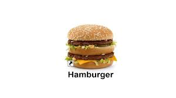

Hembober
A decidant slab of meat lovingly embraced by two delicate chunks of grain, with an endless combination of toppings and condiments to go with.
Ingredients
Required
- One cow meat slab.
- Two chunks or thin slabs of grain.
Optional popular ingredients for added decidance
- pickle slices.
- Tomato blood.
- mustard.
- Mayonaisse.
- Cheese.
Directions
- Grill your meat slab
- Place grilled meat slab onto one of your chunks or slices of grain.
- Add your optional ingredients on top of the meat slab.
- Cover your meat slab with your other chunk or slice of grain.